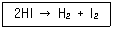
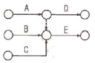
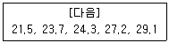

가스기능장 (2017-07-08 기출문제)
1과목: 임의 구분
1. 고압가스 저장의 기준으로 틀린 것은?
- 충전용기는 항상 40[℃] 이하의 온도를 유지할 것
- 가연성가스를 저장하는 곳에는 방폭형 휴대용 손전등 외의 등화를 휴대하지 아니할 것
- 상하의 통으로 구성된 아세틸렌발생장치로 아세틸렌을 제조하는 때에는 사용 후 그 통을 분리하거나 잔류가스가 없도록 조치할 것
- 시안화수소를 저장하는 때에는 1일 1회 이상 피로카롤 등으로 누출시험을 할 것
(정답률: 90%)

2. 시안화수소에 대한 설명 중 틀린 것은?
- 액체는 무색, 투명하며 복숭아 냄새가 난다.
- 자체의 열로 인하여 오래된 시안화수소는 중합폭발의 위험성이 있기 때문에 충전한 후 60일이 경과되기 전에 다른 용기에 옮겨 충전하여야 한다.
- 액체는 끓는점이 낮아 휘발하기 쉽고, 물에 잘 용해되며 수용액은 산성을 나타낸다.
- 염화제일구리, 염화암모늄의 염산 산성 용액 중에서 아세틸렌과 반응하여 메틸아민이 된다.
(정답률: 77%)
3. 아세틸렌 충전작업의 기준으로 옳은 것은?
- 아세틸렌을 2.5[MPa]의 압력으로 압축할 때에는 질소, 메탄, 일산화탄소 또는 에틸렌 등의 희석제를 첨가한다.
- 아세틸렌을 2.5[MPa]의 압력으로 압축할 때에는 산소와 메탄, 일산화탄소 등을 첨가한다.
- 아세틸렌을 2.5[MPa]의 압력으로 압축할 때에는 오존, 일산화탄소, 이황화탄소 등의 희석제를 첨가한다.
- 아세틸렌을 2.5[MPa]의 압력으로 압축할 때에는 산화에틸렌, 염소, 염화수소가스 등을 첨가한다.
(정답률: 82%)
4. NH4OH, NH4Cl, CuCl2를 가지고 가스흡수제를 조제하였다. 어떤 가스가 가장 잘 흡수 되겠는가?
- CO
- CO2
- CH4
- C2H6
(정답률: 76%)
5. 산업통상자원부장관은 가스의 수급상 필요하다고 인정되면 도시가스사업자에게 조정을 명령할 수 있다. “조정명령” 사항이 아닌 것은?
- 가스공급 계획의 조정
- 도시가스 요금 등 공급조건의 조정
- 가스공급시설 공사계획의 조정
- 가스사업의 휴지, 폐지, 허가에 대한 조정
(정답률: 84%)
6. 원형 단면의 연강봉에 3140[kgf]의 인장하중이 작용할 때 나타나는 인장응력이 10[kgf/mm2]일 때 이봉의 지름은 약 몇 [mm] 인가?
- 10
- 20
- 25
- 30
(정답률: 67%)
7. 이상기체에서 정압비열과 정적비열의 차는 Cp-Cv=R이 된다. R은 무엇을 의미하는가?
- 온도 1[℃] 변화 시 기체 1[mol]의 팽창에 필요한 에너지
- 온도 1[℃] 변화 시 기체분자의 회전속도
- 온도 1[℃] 변화 시 기체분자의 운동에너지
- 온도 1[℃] 변화 시 기체분자의 진동에너지의 상승
(정답률: 83%)
8. 산소, 수소, 아세틸렌을 제조하는 경우에는 품질검사를 실시하여야 한다. 다음 설명 중 틀린 것은?
- 검사는 안전관리원이 실시한다.
- 검사는 1일 1회 이상 가스제조장에서 실시한다.
- 액체산소를 기화시켜 용기에 충전하는 경우에는 품질검사를 생략할 수 있다.
- 산소는 용기 안의 가스충전압력이 35[℃]에서 11.8[MPa] 이상으로 한다.
(정답률: 82%)
9. 상용압력 5[MPa]로 사용하는 내경 65[cm]의 용접제 원통형 고압가스 설비 동판의 두께는 최소한 얼마가 필요한가? (단, 재료는 인장강도 600[N/mm2]의강을 사용하고, 용접효율은 0.75, 부식여유는 2[mm]로 한다.)
- 7[mm]
- 12[mm]
- 17[mm]
- 22[mm]
(정답률: 59%)
10. 지하에 설치하는 고압가스 저장탱크의 설치기준에 대한 설명으로 틀린 것은?
- 저장탱크실은 일정 규격을 가진 수밀콘크리트로 시공한다.
- 지면으로부터 저장탱크의 정상부까지의 깊이는 60[cm] 이상으로 한다.
- 저장탱크를 2개 이상 인접하여 설치하는 경우에는 상호간에 1[m] 이상의 거리를 유지한다.
- 저장탱크의 내면에는 부식방지코팅 등 화학적 부식 방지를 위한 조치를 한다.
(정답률: 76%)
11. 고압가스 냉동제조시설의 냉매설비와 이격거리를 두어야 할 화기설비의 분류 기준으로 맞지 않는 것은?
- 제1종 화기설비 : 전열면적이 14[m2]를 초과하는 온수보일러
- 제2종 화기설비 : 전열면적이 8[m2] 초과, 14[m2]이하인 온수보일러
- 제3종 화기설비 : 전열면적이 10[m2] 이하인 온수보일러
- 제1종 화기설비 : 정격 열출력이 500000[kcal/h]를 초과하는 화기설비
(정답률: 82%)
12. 액화산소 용기에 액화산소가 50[kg] 충전되어 있다. 용기의 외부에서 액화산소에 대해 매시 5[kcal]의 열량이 주어진다면 액화산소량이 1/2로 감소되는 데는 몇 시간이 필요한가? (단, 비점에서의 O2의 증발잠열은 1600[cal/mol] 이다.)
- 100[시간]
- 125[시간]
- 175[시간]
- 250[시간]
(정답률: 58%)
13. 위험성평가 기법 중 결함수분석(FTA)에 대한 설명으로 가장 거리가 먼 것은?
- 귀납적 해석방법이다.
- 정성적 분석이 가능하다.
- 정량적 해석이 가능하다.
- 재해현상과 재해원인과의 관련성의 해석이 가능하다.)
(정답률: 79%)
14. 1기압에서 100[L]를 차지하는 공기를 부피 5[L]의 용기에 채우면 용기 내의 압력은 몇 기압이 되겠는 가? (단, 온도는 일정하다.)
- 10기압
- 20기압
- 30기압
- 50기압
(정답률: 83%)
15. 다음 중 가장 느리게 진행될 것으로 예상되는 반응은?
- 2H2(g) + O2(g) ⇄ 2H2O(g)
- H+(aq) + OH-(aq) ⇄ H2O(L)
- Fe2+(aq) + Zn(S) ⇄ Fe(S) + Zn2+(aq)
- 2H+(aq) + Mg(S) ⇄ H(g) + Mg2+(aq)
(정답률: 67%)
16. 전성 및 비중이 크고, 부식에 강하고 유연하여 친화성이 좋아 가스켓으로는 양호한 재질이지만 200℃ 이상에서는 크리프가 큰 단점을 가지는 가스켓 재질은?
- 스테인리스
- 납
- 크롬강
- 모넬메탈
(정답률: 80%)
17. 지름 45[mm]의 축에 보스길이 50[mm]인 기어를 고정시킬 때 축에 걸리는 최대 토크가 20000[kgfㆍmm]일 경우 키(폭 = 12[mm], 높이 = 8[mm])에 발생되는 압축응력은 약 몇 [kgf/mm2] 인가? (단, 키홈의 높이는 1/2이고, 키의 길이는 보스의 길이와 같다.)
- 2.4
- 3.4
- 4.4
- 5.4
(정답률: 51%)
18. 수소의 성질 중 화재, 폭발 등의 재해발생 원인이 아닌 것은?
- 임계압력이 12.8[atm] 이다.
- 가벼운 기체로 미세한 간격으로 퍼져 확산하기 쉽다.
- 고온, 고압에서 강제에 대하여 수소취성을 일으킨다.
- 공기와 혼합할 경우 연소범위가 4~75[%]로서 넓다.
(정답률: 81%)
19. LP가스의 일반적인 연소 특성이 아닌 것은?
- 발열량이 크다.
- 연소속도가 느리다.
- 착화온도가 낮다.
- 폭발범위가 좁다.
(정답률: 67%)
20. 고압가스 안전관리법의 적용 대상이 되는 가스는?
- 철도차량의 에어콘디셔너 안의 고압가스
- 항공법의 적용을 받는 항공기 안의 고압가스
- 등화용의 아세틸렌가스
- 오토클레이브 안의 수소가스
(정답률: 88%)
2과목: 임의 구분
21. 고압가스 일반제조의 시설, 기술기준 등에 대한 설명으로 틀린 것은?
- 산화에틸렌의 저장탱크는 그 내부의 질소가스, 탄산가스 및 산화에틸렌가스의 분위기 가스를 질소가스 또는 탄산가스로 치환하고 5[℃] 이하로 유지한다.
- 충전용 주관의 압력계는 매월 1회 이상, 그 밖의 압력계는 3월에 1회 이상 표준이 되는 압력계로 그 기능을 검사한다.
- 산소 중의 가연성가스(아세틸렌, 에틸렌 및 수소를 제외한다.)의 용량이 전용량의 2[%] 이상의 것은 압축을 금지한다.
- 석유류, 유지류 또는 글리세린은 산소압축기의 내부 윤활제로 사용하지 아니한다.
(정답률: 66%)
22. 가스는 최초의 완만한 연소에서 격렬한 폭굉으로발전될 때까지의 거리가 짧은 가연성 가스일수록 위험하다. 유도거리가 짧아질 수 있는 조건으로 틀린것은?
- 압력이 높을수록
- 관속에 방해물이 있을 때
- 정상 연소속도가 낮을수록
- 점화원의 에너지가 강할수록
(정답률: 87%)
23. 유체의 부피나 질량을 직접 측정하는 기구로서, 유체의 성질에 영향을 적게 받지만 구조가 복잡하고 취급이 어려운 단점이 있는 유량측정 장치는?
- 오리피스 미터
- 습식 가스미터
- 벤투리 미터
- 로터 미터
(정답률: 86%)
24. 다음 분해 반응은 몇 차 반응에 해당되는가?

- 0차
- 1차
- 2차
- 3차
(정답률: 82%)
25. 일반도시가스사업 제조소에서 배관의 보호포 설치에 적용되는 재질 및 규격과 설치기준에 대한 설명으로 틀린 것은?
- 보호포의 폭은 15[cm] 이상으로 한다.
- 보호포의 두께는 0.2[mm] 이상으로 한다.
- 보호포의 바탕색은 최고사용압력이 저압인 관은 적색으로 한다.
- 일반형 보호포와 탐지형 보호포로 구분한다.
(정답률: 88%)
26. 산소 압축기의 내부 윤활유로 주로 사용되는 것은?
- 석유류
- 화이트유
- 물
- 진한 황산
(정답률: 88%)
27. 메탄가스가 완전연소할 때의 화학반응식은 다음과 같다. 2[g]의 메탄이 연소하면 111.3[kJ]의 열량이 발생할 때 다음 반응식에서 x는 약 얼마인가?
- 14[kJ]
- 890[kJ]
- 1113[kJ]
- 1336[kJ]
(정답률: 74%)
28. 압축기에 사용하는 윤활유의 구비조건으로 틀린 것은?
- 인화점이 낮고, 분해되지 않을 것
- 점도가 적당하고, 항유화성이 클 것
- 수분 및 산류 등의 불순물이 적을 것
- 화학적으로 안정하여 사용가스와 반응을 일으키지 않을 것
(정답률: 83%)
29. 암모니아용 냉동기에서 팽창밸브 직전 액냉매의 엔탈피가 110[kcal/kg], 흡입증기 냉매의 엔탈피가 360[kcal/kg]일 때 10[RT]의 냉동능력을 얻기 위한 냉매 순환량은 약 몇 [kg/h] 인가? (단, 1[RT]는 3320[kcal/h] 이다.)
- 65.7
- 132.8
- 263.6
- 312.8
(정답률: 63%)
30. 독성가스라 함은 공기 중에 일정량 존재하는 경우 인체에 유해한 독성을 가진 가스를 말하는데 허용농도가 얼마 이하인 경우인가? (단, 해당가스를 성숙한 흰쥐 집단에게 대기 중에서 1시간 동안 계속하여 노출시킨 경우 14일 이내에 그 흰쥐의 2분의 1 이상이 죽게 되는 가스의 농도를 말한다.)
- 100만분의 20 이하
- 100만분의 200 이하
- 100만분의 2000 이하
- 100만분의 5000 이하
(정답률: 85%)
31. 다음 중 조연성 가스가 아닌 것은?
- 오존
- 염소
- 산소
- 수소
(정답률: 78%)
32. 질소 1.36[kg]이 압력 600[kPa]하에서 팽창하여 체적이 0.01[m3] 증가하였다. 팽창과정에서 20[kJ]의 열이 공급되었고 최종 온도가 93[℃]이었다면 초기 온도는 약 몇 [℃] 인가? (단, 정적비열은 0.74[kJ/kgㆍ℃] 이다.)
- 59
- 69
- 79
- 89
(정답률: 55%)
33. 배관의 수직 방향에 의하여 발생하는 압력손실을 계산하려고 할 때 반드시 고려되어야 하는 것은?
- 입상 높이, 가스 비중
- 가스 유량, 가스 비중
- 가스 유량, 입상 높이
- 관 길이, 입상 높이
(정답률: 90%)
34. 다음 중 암모니아의 누출 식별 방법이 아닌 것은?
- 석회수에 통과시키면 유안의 백색침전이 생긴다.
- HCl과 반응하여 백색의 연기를 낸다.
- 리트머스시험지를 새는 곳에 대면 청색이 된다.
- 네슬러시약을 시료에 떨어뜨리면 암모니아의 양이 적을 때 황색, 많을 때 다갈색이 된다.
(정답률: 72%)
35. 다음은 고정식 압축도시가스 자동차 충전시설의 가스누출 검지경보장치 설치상태를 확인한 것이다. 이중 잘 못 설치된 것은?
- 충전설비 내부에 1개가 설치되어 있었다.
- 압축가스설비 주변에 1개가 설치되어 있었다.
- 배관접속부 8[m] 마다 1개가 설치되어 있었다.
- 펌프 주변에 1개가 설치되어 있었다.
(정답률: 78%)
36. 어떤 장소의 온도를 재었더니 500[°R]이었다. 이는 섭씨온도로는 약 몇 [℃] 인가?
- 3.6
- 4.6
- 5.6
- 6.6
(정답률: 69%)
37. 공기액화 분리장치에서 공기 중에 아세틸렌가스가 혼합되면 안 되는 이유에 대하여 가장 바르게 설명한 것은?
- 산소의 순도가 나빠지기 때문에
- 질소와 산소의 분리가 방해되므로
- 배관 내에서 동결하여 관을 막을 수 있으므로
- 분리기 내의 액체 산소 탱크 내에 들어가 폭발적인 작용을 하기 때문에
(정답률: 90%)
38. 다음 중 가스저장 용기 내에서 폭발성 혼합가스가 생성되는 주된 원인이 되는 경우는?
- 물 전해조의 고장에 의한 산소 및 수소의 혼합 충전
- 잔류 산소가 있는 용기 내에 아르곤의 충전
- 잔류 천연가스 용기 내에 메탄의 충전
- 유기액체를 혼입한 용기 내에 탄산가스의 충전
(정답률: 79%)
39. 가스용품에 대한 검사가 전부 생략되는 것이 아닌것은?
- 수출용으로 제조하는 것
- 시험용 또는 연구개발용으로 수입하는 것
- 산업기계설비 등에 부착되어 수입하는 것
- 주한 외구기관에서 사용하기 위하여 수입하는 것
(정답률: 83%)
40. 다음 중 가장 무거운 기체는?
- 헬륨
- 수소
- 공기
- 산소
(정답률: 78%)
3과목: 임의 구분
41. 고압가스 냉동 제조의 시설 및 기술기준에 대한 설명으로 틀린 것은?
- 냉매설비에는 그 설비가 정상적으로 작동할 수 있도록 자동제어장치를 설치한다.
- 독성가스를 사용하는 내용적이 1만 리터 이상인 수액기 주위에는 액상의 가스가 누출될 경우에 그 유출을 방지하기 위하여 방류둑을 설치한다.
- 안전밸브 또는 방출밸브에 설치된 스톱밸브는 그 밸브의 수리 등을 위하여 특별히 필요한 때를 제외하고는 항상 닫아 놓는다.
- 냉매설비에는 그 설비안의 압력이 상용압력 이하로 되돌릴 수 있는 과압안전장치를 설치한다.
(정답률: 87%)
42. 산소 100[L]가 용기의 구멍을 통해 새나가는데 20분이 소요되었다면 같은 조건에서 이산화탄소 100[L]가 새어나가는데 걸리는 시간은 약 얼마인가?
- 20.0[분]
- 23.5[분]
- 27.0[분]
- 30.5[분]
(정답률: 71%)
43. 고압가스 특정제조시설에서 설치가 완료된 배관의 내압시험 방법에 대한 설명으로 틀린 것은?
- 내압시험은 원칙적으로 기체의 압력으로 실시한다.
- 내압시험은 상용압력의 1.5배 이상으로 한다.
- 규정압력을 유지하는 시간은 5분에서 20분간을 표준으로 한다.
- 내압시험은 해당설비가 취성파괴를 일으킬 우려가 없는 온도에서 실시한다.
(정답률: 80%)
44. 고온, 고압하에서 사용하는 장치에 철재를 사용하면 철카르보닐을 형성하는 가스는?
- 일산화탄소
- 질소
- 아르곤
- 수소
(정답률: 74%)
45. 상온에서 수소용기의 파열원인으로 가장 거리가 먼것은?
- 과충전
- 수소취성
- 용기균열
- 용기의 취급불량
(정답률: 82%)
46. 안전관리자를 선임 또는 해임할 때 해임한 날로부터 며칠 이내에 다른 안전관리자를 선임하여야 하는 가?
- 7일
- 10일
- 15일
- 30일
(정답률: 80%)
47. 두 축의 축선이 약간의 각을 이루어 교차하고, 그 사이의 각도가 운전 중에 다소 변하더라도 자유롭게 운동을 전달할 수 있는 이음은?
- 기어이음(gear joint)
- 머프커플링(muff coupling)
- 플랜지 커플링(flange coupling)
- 유니버설 조인트(universal joint)
(정답률: 90%)
48. 다음 중 고압가스 제조허가의 종류가 아닌 것은?
- 고압가스 특수제조
- 고압가스 일반제조
- 고압가스 충전
- 냉동제조
(정답률: 65%)
49. 어떤 기체가 20[℃], 700[mmHg]에서 100[mL]의 무게가 0.5[g] 이라면 표준상태에서 이 기체의 밀도는 약 몇 [g/L] 인가?
- 2.8
- 3.8
- 4.8
- 5.8
(정답률: 33%)
50. 가스 배관 설비에 있어 옥내배관은 주로 강관이 사용된다. 강관 이음에서 가장 대표적으로 사용되는 이음 방법은?
- 기계적 이음
- 플레어 이음
- 나사 이음
- 소켓 이음
(정답률: 74%)
51. 고압가스 안전관리법의 적용범위에서 제외되는 고압가스가 아닌 것은?
- 등화용의 아세틸렌가스
- 냉동능력이 2톤인 냉동설비 안의 고압가스
- 온도 35[℃]에서 게이지 압력이 5.0[MPa]인 공기액화 분리장치 내의 압축공기
- 「소방시설설치유지 및 안전관리에 관한 법률」의적용을 받는 내용적 0.8리터의 소화기에 내장되는 용기 안의 고압가스
(정답률: 54%)
52. 실제기체가 이상기체처럼 행동하는 경우는?
- 높은 압력과 높은 온도
- 낮은 압력과 낮은 온도
- 높은 압력과 낮은 온도
- 낮은 압력과 높은 온도
(정답률: 83%)
53. 다음 중 액화석유가스 충전, 판매사업소의 변경허가를 받지 않아도 되는 경우는? (단, 판매시설과 영업소의 저장설비는 제외한다.)
- 사업소의 이전
- 저장설비의 교체설치
- 저장설비의 용량증가
- 사업소 대표자의 주소 변경
(정답률: 78%)
54. 포화증기를 단열압축하면 어떻게 되는가?
- 포화액체가 된다.
- 과열증기가 된다.
- 압축액체가 된다.
- 증기의 일부가 액화한다.
(정답률: 82%)
55. 검사특성곡선(OC curve)에 관한 설명으로 틀린 것은? (단, N : 로트의 크기, n : 시료의 크기, c : 합격판정개수이다.)
- N, n이 일정할 때 c가 커지면 나쁜 로트의 합격률은 높아진다.
- N, c가 일정할 때 n이 커지면 좋은 로트의 합격률은 낮아진다.
- N/n/c의 비율이 일정하게 증가하거나 감소하는 퍼센트 샘플링 검사 시 좋은 로트의 합격률은 영향이 없다.
- 일반적으로 로트의 크기 N이 시료 n에 비해 10배 이상 크다면, 로트의 크기를 증가시켜도 나쁜 로트의 합격률은 크게 변화하지 않는다.
(정답률: 67%)
56. 브레인스토밍(Brainstorming)과 가장 관계가 깊은 것은?
- 특성요인도
- 파레토도
- 히스토그램
- 회귀분석
(정답률: 86%)
57. 다음 그림의 AOA(Activity-on-Arc) 네트워크에서 E작업을 시작하려면 어떤 작업들이 완료되어야 하는가?

- B
- A, B
- B, C
- A, B, C
(정답률: 87%)
58. 표준시간을 내경법으로 구하는 수식으로 맞는 것은?
- 표준시간 = 정미시간 + 여유시간
- 표준시간 = 정미시간 × (1 + 여유율)
- 표준시간 = 정미시간 × (1/(1-여유율))
- 표준시간 = 정미시간 × (1/(1+여유율))
(정답률: 80%)
59. 다음 데이터로부터 통계량을 계산한 것 중 틀린 것은?

- 범위(R) = 7.6
- 제곱합(S) = 7.59
- 중앙값(Me) = 24.3
- 시료분산(s2) = 8.988
(정답률: 72%)
60. 품질특성에서 X관리도로 관리하기에 가장 거리가 먼 것은?
- 볼펜의 길이
- 알코올의 농도
- 1일 전력소비량
- 나사길이의 부적합품 수
(정답률: 82%)